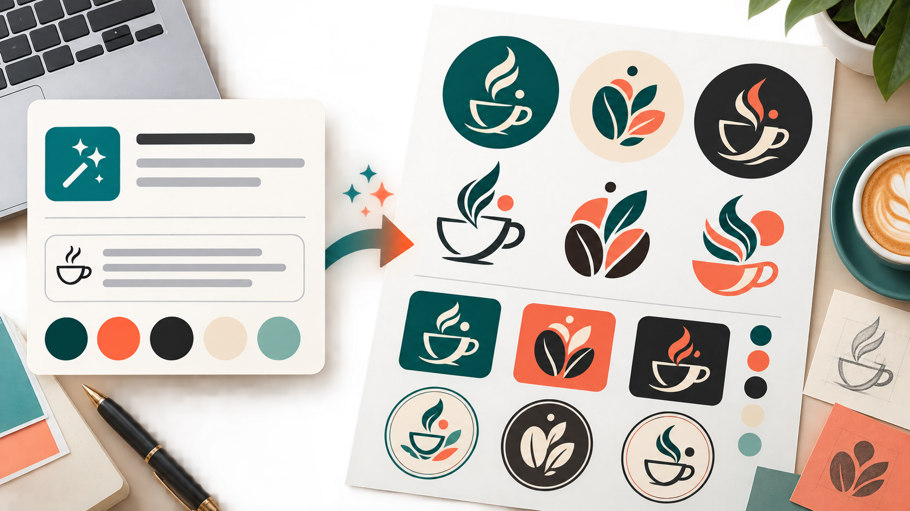

Промтзилла
Нейросеть хорошо генерирует первые идеи логотипа, если дать ей не только название, но и характер бренда, аудиторию, запреты и примеры применения.

Пошаговая инструкция
- 1Опиши бренд: чем занимается, для кого, какой характер должен быть у визуала.
- 2Укажи название, если нужен текстовый логотип, или попроси только знак.
- 3Добавь запреты: без клише, без сложных деталей, без похожести на известных конкурентов.
- 4Сгенерируй 6-8 концепций и выбери 1-2 направления.
- 5Финальный знак попроси упростить и подготовить для сайта, соцсетей и аватарки.
Какой результат просить
На старте проси не один финальный логотип, а лист направлений: так легче выбрать стиль и не застрять на первой случайной идее. Для такого сценария можно использовать GPT Image в Study24: загрузи исходные материалы, вставь промт и попроси несколько вариантов.
Промт
RU
Создай варианты логотипа по описанию бренда. Описание бренда: [вставь описание бизнеса, аудитории и характера бренда] Требования: — сделай 8 разных концепций; — логотип должен быть простым, запоминающимся и пригодным для маленькой иконки; — избегай клише и слишком детальных иллюстраций; — не копируй стиль известных брендов; — покажи варианты знака, цветовой палитры и использования на светлом/тёмном фоне; — если используешь текст, пиши его аккуратно и без ошибок: [название]. После генерации объясни, какие 2 варианта самые сильные и почему.
EN
Create logo concepts from this brand description. Brand description: [insert business, audience, and brand personality] Requirements: — create 8 different concepts; — the logo must be simple, memorable, and usable as a small icon; — avoid clichés and overly detailed illustrations; — do not copy famous brand styles; — show mark variations, color palette, and light/dark background usage; — if text is used, write it carefully and without mistakes: [brand name]. After generating, explain which 2 concepts are strongest and why.
Важно
Перед использованием проверь уникальность логотипа и права на знак. Нейросеть может случайно сделать похожую форму.
Теги